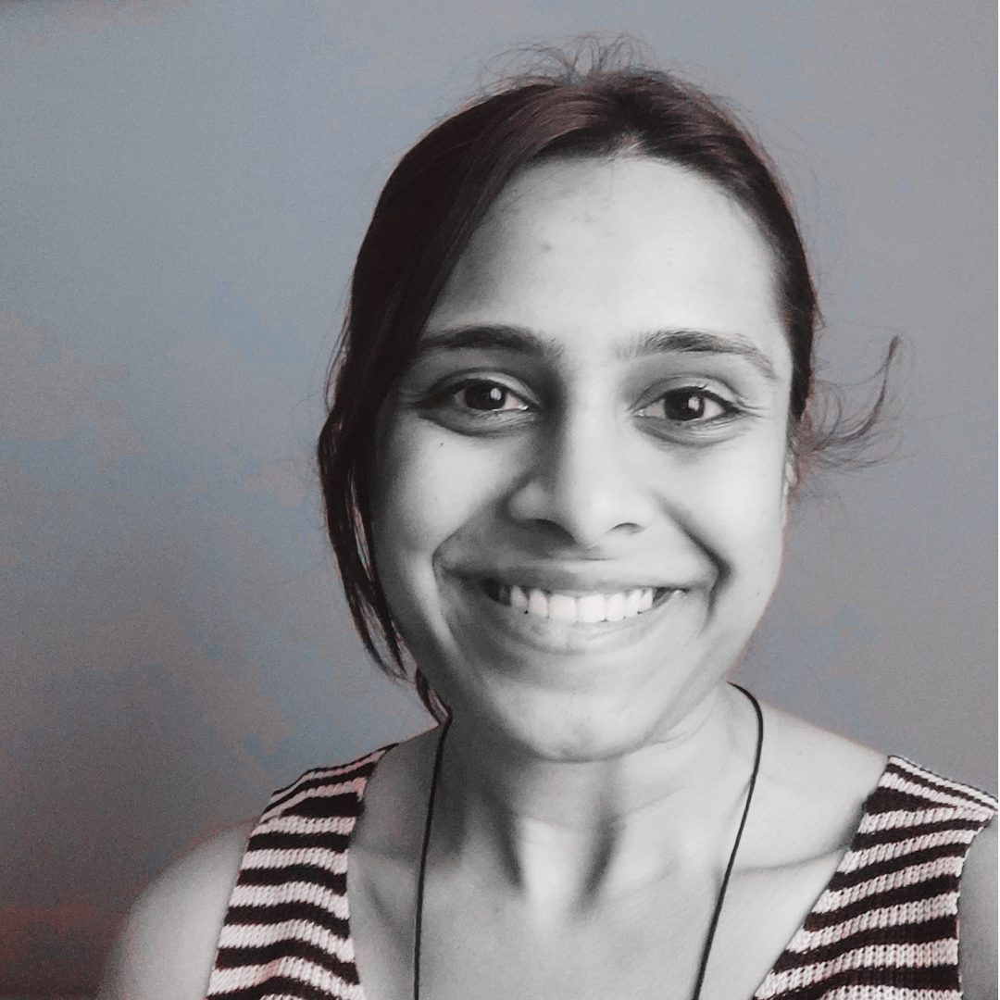

Hi, lovely to meet you.
I'm Shravya Gubbi— a Pranic Healing practitioner based in Bengaluru, offering online and in-person pranic healings and community pranic wellness sessions.

Shravya Gubbi
I'm a dedicated Pranic Healing practitioner passionate about healing, self-development and service. I'm committed to regularly practising Pranic Healing and using the practice for my own wellbeing, growth and inner development, while also helping others experience its vast benefits.
My work focuses on making Pranic Healing accessible through healing sessions, meditations, introductory sessions, healing camps and community gatherings. I'm particularly passionate about supporting perople's personal all-round growth with pranic healing.
Beyond offering healing, I'm deeply committed to spreading the teachings and practice of Pranic Healing — encouraging people to learn, practise self-healing and develop the ability to heal and help others. Through my community work, I aim to create a welcoming space where people can learn, practise, receive pranic healing and support one another.
"I see Pranic Healing as One Global Compassionate Movement - Thousands of Healers. Millions Healed."
How I work
I'm committed to strictly adhering to the code of conduct and guidelines laid down by Master Choa Kok Sui for Pranic Healers, which include:
- No touch, no drugs — all work is done on the energy field, never on the physical body, and no medication or supplements are prescribed.
- No diagnosis, no promises — Pranic Healers do not diagnose conditions, make medical claims or guarantee outcomes.
- Complementary, never a replacement — clients are always encouraged to continue with their doctor or medical professional alongside sessions.
- Confidentiality — everything shared in a session stays private.
- Neutrality and objectivity — the healer remains unbiased, focusing only on the client's energy needs rather than personal judgement.
- Fitness to treat — sessions are held only when the healer is well-rested and emotionally centred, to ensure the client receives the best possible care.
I am committed to hold every healing and session to these standards of ethics, discipline and care.
What clients & community say
A few sample testimonials below. Find more here
Begin your journey.
Have a question, want to book a session, or want to join an upcoming event? Get in touch — we'd love to hear from you.
Get in touch